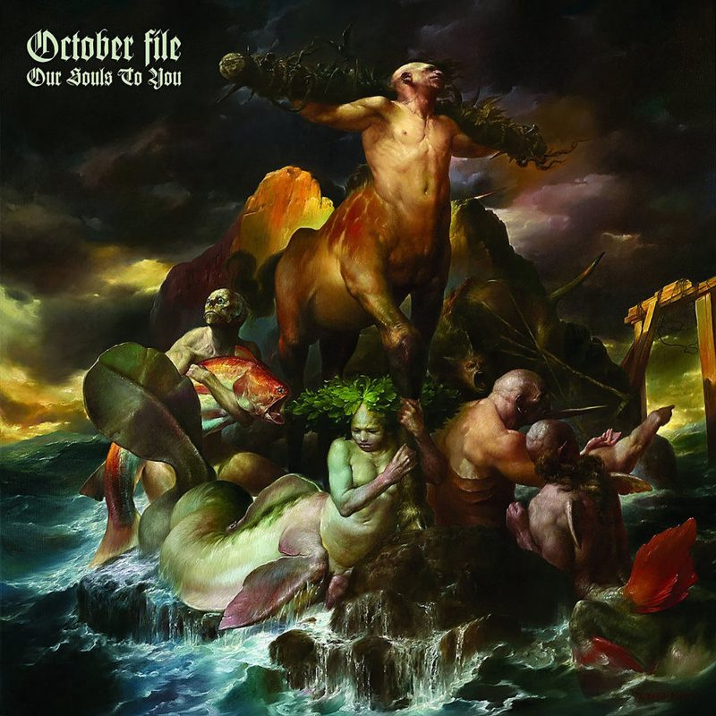
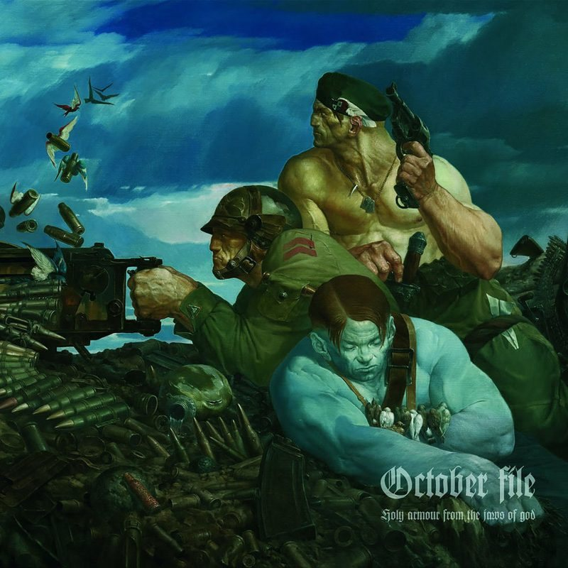
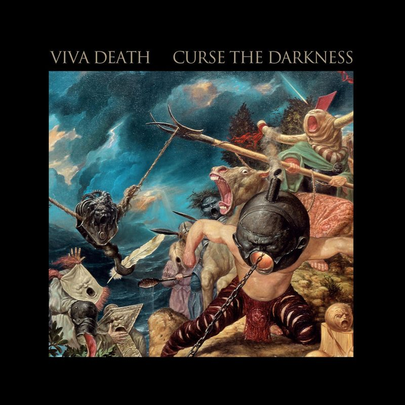

Música
Portadas de discos
Cuadros de Viktor Safonkin en portadas de discos. Haga clic en una portada para escuchar el disco.



Portadas de discos
Cuadros de Viktor Safonkin en portadas de discos. Haga clic en una portada para escuchar el disco.


